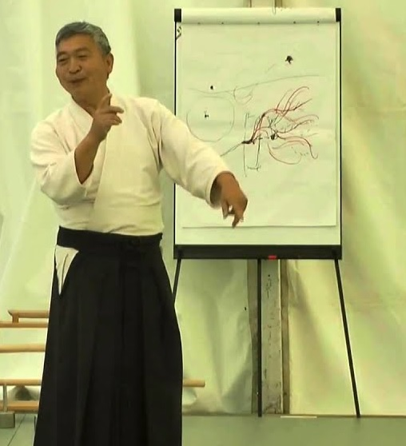

Técnicas de Aikido
Artículos escritos por: Doshu Kenjiro Yoshigasaki

1.- Porque Aikido no es autodefensa
Hay dos palabras cuya diferencia no es conocida para la mayoría de las personas. Una es proteger y la otra es defender. Proteger significa hacer algo para que una vida o material continúe existiendo sin daño. Usted protege su teléfono celular con una cubierta o se protege a si mismo de un virus. Defender significa hacer algo de tal modo que una persona u organización puedan continuar ejerciendo lo que hacen. Por eso usted puede defender el derecho humano de las personas. Un gobierno defiende su país con su ministerio de defensa. La armada está bajo el ministerio de defensa y por eso su tarea es defender. El trabajo de la policía puede ser el de proteger bajo un gobierno democrático y el de defender bajo un gobierno no-democrático.
Si usted quiere defender algo, tiene que controlar a otros. El control está, básicamente, en contra de los derechos humanos, ya que un ser humano no tiene el derecho de controlar a otros. Que no tenga derecho, no significa que no deba hacerse. Un padre no tiene derecho de controlar a su hijo, pero el/ella puede y debe controlar a su hijo si es necesario.
Cuando usted practica una técnica de Aikido, tiende a controlar a Uke. Entonces Aikido se vuelve de autodefensa y tiende a ser agresivo. Uno tiene que dominar la técnica con la ayuda de Uke. Un maestro es alguien que puede realizar una técnica perfectamente. Por eso hay maestros en artesanía, arte, etc. En Alemania hay un gremio de maestros quienes están manteniendo las técnicas tradicionales. Usted debe dominar las técnicas de Aikido de tal modo que pueda usarlas para proteger su vida y crear una vida y un mundo mejor.
21 de Abril de 2020
Texto escrito por: Doshu Kenjiro Yoshigasaki
Texto traducido por: Sensei Norberto Kiman
Conferencia original en Inglés: Toitsu.dk - Aikido Techniques
2.- Diferencia entre Undo (ejercicio) y Waza (técnicas)
Una técnica es una forma fija en un entorno fijo para alcanzar un objetivo fijo. Si usted quiere aplicar una técnica en el mundo real, tiene que ajustarlo porque en el mundo real el entorno está cambiando. En su vida, el objetivo puede cambiar también por eso usted tiene que actuar y no aplicar una técnica. Aprender técnicas lo ayuda a actuar mejor en su vida. Al practicar una técnica en Aikido, normalmente se le aplica esta a un Uke. Por eso uno tiende a reaccionar a lo que hace Uke y por eso no pueder guiar. Esa es la dificultad para desarrollar una técnica correcta de Aikido. Para guiar a Uke, usted tiene que imaginar un segundo en el futuro durante la técnica. La forma mas fácil es hacer la técnica solo, imaginando a Uke. Sin embargo, no es fácil imaginar, especialmente cuando uno es un principiante. Uno tiene que desarrollar la habilidad de la imaginación.
Ejercicio o Undo es una actividad para desarrollar su habilidad de hacer algo o para mantener la salud. Kenko Taiso es para mantener la salud y Aiki Taiso es para desarrollar la habilidad de imaginar técnicas de Aikido. Cuando usted aplica una técnica a Uke, ambos, el cambio de forma y el cambio de lugar, están pasando todo el tiempo. Por eso es dificil imaginar el conjunto. Usted tiene que imaginar separadamente el cambio de forma y el cambio de lugar. En música clásica hicieron esto separando el ritmo y la melodía.
Aiki Taiso es diferente de realizar una técnica por uno mismo. Cuando uno realiza una técnica por uno mismo, se cambia la forma y el lugar al mismo tiempo que la imaginación. Cuando se hace Aiki Taiso, usted primero cambia la forma sin cambiar el lugar. Después que cambió la forma sin cambiar el lugar, usted cambia el lugar sin cambiar la forma. Algunas veces usted cambia la forma, cambia el lugar y cambia la forma nuevamente. Practicando Ejercicios o Undo, usted desarrolla la habilidad de la imaginación de una técnica de Aikido con Uke.
23 de Abril de 2020
Texto escrito por: Doshu Kenjiro Yoshigasaki
Texto traducido por: Sensei Norberto Kiman
Conferencia original en Inglés: Toitsu.dk - Aikido Techniques
3.- El Poder tiene la Razón y la Mayoría tiene la Razón
Las plantas y animales tienen instinto de supervivencia. Por eso hay instintos básicos y uno es "el Poder tiene la Razón" y lo siguiente es "la Mayoría tiene la Razón". Dado que los seres humanos son también animales, esos instintos permanecen en ellos. Así como en la mayoría de los animales, "el Poder tiene la Razón" solía funcionar también en el mundo humano. Aquellos que tenían fuerza militar conquistaban al mundo. Sin embargo, los seres humanos son capaces de disfrutar una vida mejor, diferente que las plantas y los animales. Para disfrutar mejor de la vida, uno necesita de los esclavos y por eso uno tiene que respetar que "La Mayoría tiene la Razón". Esta idea creó la democracia y se convirtió en la dictadura de la Mayoría. Esos dos instintos animales también existen en el mundo del Aikido. En el dojo muy a menudo las personas justifican sus técnicas diciendo "el Poder tiene la Razón". Si uno lo puede hacer, eso significa que está bien. Por eso una persona con más fuerza puede justificar su técnica. Luego una gran organización de Aikido reclama estar en lo correcto, usando la idea de "la Mayoría tiene la razón". Esta idea desarrolla otra idea: "Cuanto más, mejor". La mayoría de los gobiernos piensan "cuantas más armas, mejor" y "cuanto más dinero, mejor".
Sin embargo, desde el 2000 la economía mundial en términos de volumen por persona no se ha desarrollado. Así, una de las personas más ricas del mundo declaró, "La gente rica debería donar un tercio de su dinero al mundo". Por supuesto, lo que quería decir era que la gente rica debería gastar un tercio de su dinero para controlar al mundo y de ese modo permanecer ricos para siempre. En Japón mucha personas jóvenes comenzaron un negocio con mínimo beneficio en forma exitosa. Dado que la condición económica es difícil en todo el mundo, ellos prefieren tener un negocio estable con mínimo beneficio a pasarse la vida corriendo. Hay un viejo proverbio Francés que dice, "Le mieux est l'ennemi du bien" lo cual significa: "Lo mejor es enemigo de lo bueno". Si usted pone MÁS esfuerzo en mejorar algo, esto puede causar el resultado opuesto.
Esta derivación de "cuanto más, mejor" es puramente humana, porque las plantas y animales son felices con sólo lo necesario y ellos no quieren más que eso. Es por eso que la idea de "cuanto más, mejor" está destruyendo la parte de la vida del mundo. Tenemos que ser cuidadosos con esos instintos animales, los cuales existen en casi todos los aspectos de este mundo. La humanidad se desarrolló alejándose del instinto animal, así que del mismo modo tenemos que entender, los errores de la humanidad.
25 de Abril de 2020
Texto escrito por: Doshu Kenjiro Yoshigasaki
Texto traducido por: Sensei Norberto Kiman
Conferencia original en Inglés: Toitsu.dk - Aikido Techniques
4.- Viviendo con dolor
Si usted mira los métodos antiguos de practica en el mundo, muchos de ellos incluyen del pasar a través del dolor. Este no es solo un método Japonés sino también de Europa, África, América y otros lugares del mundo. Esto era así porque la gente sabía convivir con el dolor por aquellos días. Esos métodos con dolor desaparecieron completamente excepto en una comunidad donde las personas están tratando de preservar la vieja cultura.
Alrededor de 100 años atrás, las personas tenían que vivir con dolor en todo el mundo, pero en estos días las técnicas con analgésicos se han desarrollado en la ciencia enormemente. Por eso la gente joven no sabe como vivir con dolor y solo quieren liberarse de el. Es bueno tener la tecnología para aliviar el dolor pero no es posible liberarse de el completamente.
En estos días mucha gente joven sufre de dolor psicológico. Tenemos que entender que los analgésicos son básicamente malos para la salud. Por eso es lógico que deberíamos vivir con tan pocos analgésicos como sea posible en nuestras vidas. Por eso yo pienso que las técnicas dolorosas en Aikido son buenas para practicar y deberíamos tratar de vivir con dolor tanto como sea posible en nuestras vidas. Ver los pensamientos y el cuerpo ayuda a vivir con dolor, porque la mayoría de las personas desarrollan mas dolor con una psique errónea. Hay técnicas para vivir con dolor en la vida diaria. Yo espero que los estudiantes de Aikido puedan desarrollar estas técnicas a través de la práctica de Aikido.
25 de Abril de 2020
Texto escrito por: Doshu Kenjiro Yoshigasaki
Texto traducido por: Sensei Norberto Kiman
Conferencia original en Inglés: Toitsu.dk - Aikido Techniques
5.- Ma Ai y distanciamiento
El cambio básico que creó el Covid en nuestra sociedad es el distanciamiento. La transmisión del virus puede ser detenida mayormente manteniendo la distancia de 1.5 metros entre las personas. Esto no cambia mi vida personal porque esta distancia corresponde con el Ma Ai en Aikido y yo me siento confortable cuando todas las personas respetan este Ma Ai. La sociedad está controlada por la fuerza militar y no por la gente rica. "Rico" significa mucho dinero en una sociedad basada en la economía del dinero. Los Mongoles quienes conquistaron un tercio del continente Eurasiático, fueron muy poderosos pero no ricos. Los Egipcios, quienes tenían oro y joyas eran poderosos pero no ricos. La economía del dinero está basada en la sociedad agrícola. La agricultura se desarrolló mucho desde el siglo XIII y esto creó la idea en el mundo de que la sociedad agrícola había comenzado a destruir la sociedad de la caza en todo el mundo. La gente rica comenzó a controlar la fuerza militar y consecuentemente la fuerza política.
El Ma Ai en Aikido se basa en técnicas de pelea, pero ya había Ma Ai en todo el mundo donde la gente rica controla la sociedad. Ellos mantienen la distancia entre las personas, especialmente entre ricos y pobres. El rey se sienta más alto que los demás porque las bacterias y los virus mayormente se propagan de arriba hacia abajo. Yo pienso que había un conocimiento del peligro en la sociedad basada en la agricultura. Hay dos peligros, uno del ataque de seres humanos y otro del ataque de bacterias y virus. Ambos pueden ser evitados un poco manteniendo la distancia Ma Ai. La gente de caza y las personas pobres no podían mantener la distancia entre las personas en su sociedad.
Hasta cien años atrás, había distanciamiento basado en cuán rico eras. Cuanto más rico, más distancia. Esto protegía a la gente rica de ataques de los seres humanos y también de bacterias y virus. Desde hace cien años, el petróleo creó la fuerza militar y el dinero. El dinero acostumbraba basarse en oro, pero desde 1970 el dinero se basa en el petróleo y ahora (desde 1990) se basa en la fuerza militar a través del sistema bancario internacional. Por eso el distanciamiento entre gente rica y también de la gente pobre ha desaparecido en países donde la economía del dinero está altamente desarrollada. Eso es por lo que aún la gente rica muere con Corona virus en Europa, Estados Unidos y Japón.
Ahora la gente rica en Estado Unidos y Europa descubrió el peligro del virus y la necesidad del distanciamiento. Cien años atrás, ellos crearon un mundo donde había distancia entre las personas en las sociedades de gente rica y no había espacio para mantener la distancia en las sociedades de gente pobre. La gente rica tenía una casa grande con jardín grande y la gente pobre vivía en casas muy pequeñas. Ahora la mayoría de las personas tienen un espacio razonable para vivir, y por eso el espacio público se está volviendo más y más pequeño. De aquí que la distancia entre las personas en el espacio público y en el transporte público no sea suficiente. En un país donde ricos y pobres viven separadamente, también en el espacio y el transporte público las personas están separadas.
18 de Junio de 2020
Texto escrito por: Doshu Kenjiro Yoshigasaki
Texto traducido por: Sensei Norberto Kiman
Conferencia original en Inglés: Toitsu.dk - Aikido Techniques
6.- Tsuzukiwaza 13 - Ryotemochi
Detención del video 1: En Aikido, lo más importante es entender que la belleza de las técnicas, estén de acuerdo con la eficiencia en la vida real. Los deportes son una parte artificial de la vida, la cual se la denomina competencia. Las técnicas en una competencia, no son necesariamente hermosas, porque una competencia no es la vida real. En la vida real tenemos que considerar varias personas que puedan atacarlo. Por eso usted debe enfrentar al próximo atacante inmediatamente, luego que ha terminado con Uke. Las primeras dos técnicas muestran esto en la postura final de Nage. Nage debe detenerse al final de cada técnica de tal modo que pueda tratar con el próximo atacante. En ese momento, Nage debe estar suficientemente lejos de Uke de tal modo que Uke no lo pueda atacar inmediatamente.
Detención del video 2: La última técnica muestra que usted puede tratar con dos atacantes al mismo tiempo y por eso debe ser capaz de detener a Uke completamente. Nage puede arrojar a Uke en la dirección que el venía o tratar con el segundo Uke mientras se mantiene al primero.
1 de Octubre de 2020
Escrito por: Doshu Kenjiro Yoshigasaki
Traducido por: Sensei Norberto Kiman
Conferencia original en Inglés: Toitsu.dk - Aikido Techniques
7.- Tsuzukiwaza 19 - Tsuki
Cuando practica Tsuzukiwaza con un Uke, usted ve solo un atacante y por eso se detiene completamente para percibir si otro atacante aparece y donde aparece. Cuando practica con varios Ukes, usted tiene una idea global de donde están, por eso debe mantenerse cambiando su posición luego de cada técnica mientras trata de saber donde se encuentran.
Detención del video 1: En una situación real Nage tiene permitido golpear a Uke, pero el propósito de golpear no debería ser el hacer daño, sino cambiar la mente de Uke. Eso es por lo que Nage intenta hacer caer a Uke con el movimiento de golpear. Uke permite a Nage practicar el movimiento correcto, sin ser dañado el mismo.
Detención del video 2: Después que se termina una técnica con un Uke, Nage debe inmediatamente tratar con el siguiente, haciendo primero Irimi o Tenshin. Nage debe detenerse completamente en el momento que Uke cae, de tal modo que pueda cambiar su posición libremente y así tratar con el próximo Uke.
5 de Octubre de 2020
Escrito por: Doshu Kenjiro Yoshigasaki
Traducido por: Sensei Norberto Kiman
Conferencia original en Inglés: Toitsu.dk - Aikido Techniques
8.- Tsuzukiwaza 2 - Ushiro Katatedori
Detención del video 1: Nage debe cambiar la forma del brazo de Uke de completamente cerrado a completamente abierto. El hace esto guiando el brazo de Uke en un gran círculo rotando el codo de Uke.
Detención del video 2: Nage no debería tratar de empujar el codo de Uke hacia abajo sino guiarlo adelante y abajo en un movimiento espiral con el brazo estirado. Este movimiento espiral es guiado por la otra mano de Nage la cual está sosteniendo la muñeca de Uke.
Detención del video 3: Nage debe guiar a Uke abajo guiando el brazo completo de Uke en un gran círculo con su Tegatana antes de agarrar su muñeca para aplicar Koteoroshi.
Octubre de 2020
Escrito por: Doshu Kenjiro Yoshigasaki
Traducido por: Sensei Norberto Kiman
Conferencia original en Inglés: Toitsu.dk - Aikido Techniques
9.- Kumitachi (parte 1)
Detención del video 1: Al comienzo las personas acostumbraban practicar técnicas de Aikido una por una. Luego apareció la idea de la competencia. Sin embargo, las técnicas de Aikido están hechas para funcionar contra varios atacantes y por eso Tohei Sensei comenzó a poner seis técnicas de tal modo que los estudiantes puedan aprender a tratar con varios atacantes.
Detención del video 2: En la vida real tenemos que hacer diferentes técnicas de acuerdo a la situación y a este tipo de práctica se lo llamó "técnicas libres". Pero no es fácil hacer técnicas libres y por eso Tohei Sensei eligió una forma de ataque para cada Tsuzukiwaza para hacerlo fácil de practicar. Así podemos hacer muchos Tsuzukiwaza diferentes si es necesario. Nosotros podemos crear muchos Tsuzukiwaza diferentes y variantes de un Tsuzukiwaza mientras estas variantes desarrollen nuestra habilidad para tratar con peligros en la vida real y para crear nuestra vida y el mundo.
Detención del video 3: Cuando practicamos Bokken o Jo, practicamos Kata. Hay muchas técnicas, por ejemplo, 20. Es difícil practicar 20 técnicas, por eso un maestro eligió 10 técnicas y creó un Kata. La pregunta es cómo elegir 10 técnicas de 20. Esto es matematica. Practicando 10 técnicas usted debería desarrollar la habilidad de hacer 20.
Detención del video 4: Usted puede desarrollar la habilidad de hacer dos técnicas practicando una. Un maestro elige 10 técnicas y luego las pone juntas de un modo armonioso.
Detención del video 5: Kumitachi: Uke ataca con Kote y Nage contraataca. Uke va hacia atrás para evitar el ataque de Uke y ataca de nuevo con Tsuki.
Detención del video 6: Uke ataca con Kote y cuando Nage trata de contraatacar, Uke inmediatamente ataca de nuevo con Tsuki.
Detención del video 7: Uke puede estar en Hanmi o Gyaku Hanmi mientras su tronco y su Bokken mantenga la relación correcta con Nage y su Bokken.
Detención del video 8: En este Kumitachi Uke usa Gyaku Hanmi para atacar inmediatamente.
Detención del video 9: Al comienzo el Bokken de Nage está apuntando a Uke. Luego Uke baja su cuerpo de tal modo que su cuerpo está fuera de la dirección del Bokken y el Bokken de Uke queda apuntando a Nage.
Octubre de 2020
Escrito por: Doshu Kenjiro Yoshigasaki
Traducido por: Sensei Norberto Kiman
Conferencia original en Inglés: Toitsu.dk - Aikido Techniques
10.- Kumitachi (parte 2)
Noviembre 2020
Explicado por: Doshu Kenjiro Yoshigasaki
Subtítulos traducidos al Castellano por: Sensei Norberto Kiman
Conferencia original en Inglés: Toitsu.dk - Aikido Techniques
11.- Kumitachi (parte 3)
Noviembre 2020
Explicado por: Doshu Kenjiro Yoshigasaki
Subtítulos traducidos al Castellano por: Sensei Norberto Kiman
Conferencia original en Inglés: Toitsu.dk - Aikido Techniques
12.- La enseñanza en el Aikido.
Aikido nació antes del uso del petróleo y yo siempre enseñé una forma de vida libre del uso del petróleo. El mundo debe cambiar pero las personas y los gobiernos están tratando de no cambiar. Los nuevas formas de aprendizaje del Aikido son solo modificaciones superficiales y adaptaciones, no son un cambio real. El Aikido debe guiar el mundo a cambiar fundamentalmente.
La única manera de entender este mundo es verlo sin ponerle nombre a nada. Eso es por lo que usted primero debe ver sus pensamientos los cuales incluyen muchos nombres. De ese modo usted comienza a ver el mundo sin ponerle nombres y ese es el comienzo para poder ver la realidad.
Aikido es solo un nombre para una determinada actividad que realizan los seres humanos. Cada persona que practica Aikido tiene su propio propósito. Yo estoy enseñando Aikido y mi propósito al enseñarlo es ayudar a cada persona a crear su vida. Es posible que usted sea atacado físicamente y por eso las técnicas de Aikido deben ayudarlo a tratar con un ataque físico. Además hay ataques psicológicos y conflictos, por eso la práctica de Aikido debe ser capaz de tratar con ellos también. Pero sobre todo usted debe poder crear su vida, por eso yo enseño Aikido de forma tal que la práctica lo ayude a hacerlo.
En las artes marciales Japonesas, las personas talentosas creaban su propio arte rechazando cualquier transferencia de conocimiento, la mayoría de las personas solo aceptaban la idea de la transferencia de la tradición. Ahora, la idea de transferir conocimiento no es buena incluso para las personas normales. Usted debe enseñar lo que usted piensa que es bueno enseñar. Uno solo aprende para crear su vida. Eso es todo. No debe copiar a otros. No debe tampoco copiarme a mi.
O sea que no debería haber ninguna transferencia de conocimiento o instrucción en Aikido ni en ningún arte. La idea de transferencia de conocimiento era válida hasta 100 años atrás, cuando cada generación solo estaba repitiendo a la generación anterior, ya que la sociedad no cambiaba mucho. Usted solo continuaba el trabajo de sus padres y pensaba que sus hijos continuarían el suyo, pero ahora no es así. El mundo está cambiando muy rápidamente y cada generación debe crear su propio mundo.
Lo importante es que uno no debería tener una mente de pelea, el propósito de enseñar Aikido es crear una mente que no pelee. Simplemente se deben practicar las técnicas de Aikido normales, con una mente correcta, con una mente de no pelea. De este modo, también puede entrenar solo, practicando la Respiración Ki, Aiki Taiso, leer mis conferencias y en especial profundizar el entendimiento de usted mismo y el mundo.
Yo veo el Aikido desarrollándose en el futuro como una forma de arte. Los practicantes, futuros instructores e instructores de dojo deberían desarrollar el Aikido de acuerdo al mundo y al medio ambiente. Aikido no puede ser enseñado a través de ninguna plataforma ya que el mundo no puede ser creado a través de ella.
Abril de 2020
Texto escrito por: Doshu Kenjiro Yoshigasaki
Texto traducido y compilado por: Sensei Norberto Kiman
Conferencia original en Inglés: Toitsu.dk - Aikido Techniques
13.- Aikido y la imaginación del futuro
La palabra "arte marcial" no tiene sentido porque "marcial" significa "guerra" y guerra es lo opuesto al arte. Hay muchos nombres los cuales fueron inventados para traducir a otro lenguaje y la mayoría de ellos no tienen sentido. La gente cree cosas sin sentido solo porque todos las usan. "Budo" es también un nombre inventado alrededor de 150 años atrás en Japón y también es un nombre que no es correcto. Es imposible dar el significado de la palabra, pero las personas que comenzaron a usar el nombre querían decir "modo de vida para detener la pelea". Por eso "Budo" y "arte marcial" son muy diferentes. No solo hay muchos nombres sin sentido en el mundo sino que todos los nombres están equivocados en el sentido que el nombre y la realidad son siempre diferentes. Por eso es inútil tratar de entender el significado preciso de un nombre.
Hay que distinguir la práctica de técnicas de deporte y la vida de las personas. Todos, incluidos los deportistas viven sus vidas imaginando su futuro. Así que algunas veces podemos imaginar el futuro muy bien. Es posible que algunas veces un deportista pueda imaginar el futuro de la competencia. Esto no tiene nada que ver con la práctica de su deporte el cual es el desarrollo de un reflejo condicionado. Usted debe entender lo que es un reflejo condicionado. Reflejo significa reaccionar contra la acción de un oponente. Mientras que en Ki Aikido usted imagina lo que va a hacer y lo hace. Esto es por lo que usted debería ser capaz de hacer una técnica por usted mismo. De otro modo usted puede actuar por reflejo.
Una técnica sucede en un ambiente determinado, usando un determinado juego de técnicas fijas y persiguiendo un resultado fijo. Cuando practica una técnica, usted puede hacerlo con imaginación del futuro. Entonces está practicando un arte. Si practica una técnica sin imaginación del futuro, está desarrollando un reflejo condicionado. En deportes usted solo imagina el resultado final y no el proceso para alcanzarlo. Por supuesto un deportista de un muy alto standard que haya desarrollado un reflejo condicionado perfecto, puede desarrollar la imaginación del futuro. Pero eso está reservado solo para los grandes campeones. La práctica de Aikido debe ser la práctica de un arte y no de un deporte.
Es verdad que la mayoría de la gente de Aikido que no están siguiendo mi enseñanza tiende a desarrollar un reflejo condicionado como en los deportes. Esa es la dificultad de enseñar Aikido. Es muy importante practicar todas las técnicas de Aikido solos. Esto es lo que Tohei Sensei comenzó y es la diferencia más importante entre el Ki Aikido y otros. Si usted practica siempre con Uke, tiende a reaccionar, lo cual termina en pelea. Usted se basa en el pasado y todos los actos basados en el pasado eventualmente se desarrollarán como una pelea. Practicando todas las técnicas por usted mismo, luego cuando usted practica con Uke, su mente está en el futuro. Esto significa que usted está guiando a Uke y no reaccionando contra Uke.
Un acto es una expresión de uno mismo en un ambiente percibido. Por eso, la vida es una continuación de percibir y actuar alternativamente. Al conjunto de una percepción y un acto se lo llama "un momento" y el largo de un momento en ciencia es de "un segundo". Un segundo corresponde básicamente a un latido del corazón y usted actúa en armonía con el latido de su corazón. Por eso usted imagina el "momento" siguiente.
Abril de 2020
Texto escrito por: Doshu Kenjiro Yoshigasaki
Texto traducido y compilado por: Sensei Norberto Kiman
Conferencia original en Inglés: Toitsu.dk - Aikido Techniques
Artículos

Bibliografía

Mirá videos de la práctica